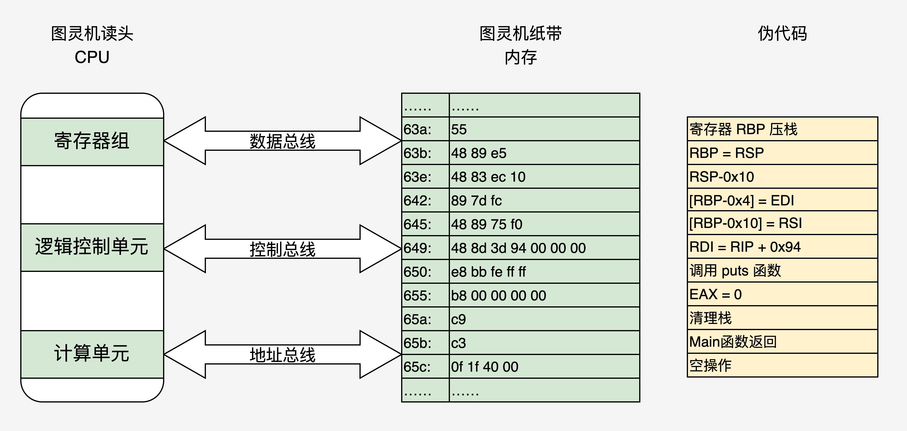

- 00 开篇词 为什么要学写一个操作系统？.md.html
- 00 编辑手记 升级认知，迭代自己的操作系统.md.html
- 01 程序的运行过程：从代码到机器运行.md.html
- 02 几行汇编几行C：实现一个最简单的内核.md.html
- 03 黑盒之中有什么：内核结构与设计.md.html
- 04 震撼的Linux全景图：业界成熟的内核架构长什么样？.md.html
- 05 CPU工作模式：执行程序的三种模式.md.html
- 06 虚幻与真实：程序中的地址如何转换？.md.html
- 07 Cache与内存：程序放在哪儿？.md.html
- 08 锁：并发操作中，解决数据同步的四种方法.md.html
- 09 瞧一瞧Linux：Linux的自旋锁和信号量如何实现？.md.html
- 10 设置工作模式与环境（上）：建立计算机.md.html
- 11 设置工作模式与环境（中）：建造二级引导器.md.html
- 12 设置工作模式与环境（下）：探查和收集信息.md.html
- 13 第一个C函数：如何实现板级初始化？.md.html
- 14 Linux初始化（上）：GRUB与vmlinuz的结构.md.html
- 15 Linux初始化（下）：从_start到第一个进程.md.html
- 16 划分土地（上）：如何划分与组织内存？.md.html
- 17 划分土地（中）：如何实现内存页面初始化？.md.html
- 18 划分土地（下）：如何实现内存页的分配与释放？.md.html
- 19 土地不能浪费：如何管理内存对象？.md.html
- 20 土地需求扩大与保障：如何表示虚拟内存？.md.html
- 21 土地需求扩大与保障：如何分配和释放虚拟内存？.md.html
- 22 瞧一瞧Linux：伙伴系统如何分配内存？.md.html
- 23 瞧一瞧Linux：SLAB如何分配内存？.md.html
- 24 活动的描述：到底什么是进程？.md.html
- 25 多个活动要安排（上）：多进程如何调度？.md.html
- 26 多个活动要安排（下）：如何实现进程的等待与唤醒机制？.md.html
- 27 瞧一瞧Linux：Linux如何实现进程与进程调度_.md.html
- 28 部门分类：如何表示设备类型与设备驱动？.md.html
- 29 部门建立：如何在内核中注册设备？.md.html
- 30 部门响应：设备如何处理内核I_O包？.md.html
- 31 瞧一瞧Linux：如何获取所有设备信息？.md.html
- 32 仓库结构：如何组织文件_.md.html
- 33 仓库划分：文件系统的格式化操作.md.html
- 34 仓库管理：如何实现文件的六大基本操作？.md.html
- 35 瞧一瞧Linux：虚拟文件系统如何管理文件？.md.html
- 36 从URL到网卡：如何全局观察网络数据流动？.md.html
- 37 从内核到应用：网络数据在内核中如何流转.md.html
- 38 从单排到团战：详解操作系统的宏观网络架构.md.html
- 39 瞧一瞧Linux：详解socket实现与网络编程接口.md.html
- 40 瞧一瞧Linux：详解socket的接口实现.md.html
- 41 服务接口：如何搭建沟通桥梁？.md.html
- 42 瞧一瞧Linux：如何实现系统API？.md.html
- 43 虚拟机内核：KVM是什么？.md.html
- 44 容器：如何理解容器的实现机制？.md.html
- 45 ARM新宠：苹果的M1芯片因何而快？.md.html
- 46 AArch64体系：ARM最新编程架构模型剖析.md.html
- LMOS来信：第二季课程带你“手撕”计算机基础.md.html
- 大咖助场 以无法为有法，以无限为有限.md.html
- 用户故事 yiyang：我的上机实验“爬坑指南”.md.html
- 用户故事 成为面向“知识库”的工程师.md.html
- 用户故事 技术人如何做选择，路才越走越宽？.md.html
- 用户故事 操作系统发烧友：看不懂？因为你没动手.md.html
- 用户故事 用好动态调试，助力课程学习.md.html
- 用户故事 艾同学：路虽远，行则将至.md.html
- 结束语 生活可以一地鸡毛，但操作系统却是心中的光.md.html
- 捐赠
01 程序的运行过程：从代码到机器运行
你好，我是LMOS。
欢迎来到操作系统第一课。在真正打造操作系统前，有一条必经之路：你知道程序是如何运行的吗？
一个熟练的编程老手只需肉眼看着代码，就能对其运行的过程了如指掌。但对于初学者来说，这常常是很困难的事，这需要好几年的程序开发经验，和在长期的程序开发过程中对编程基本功的积累。
我记得自己最初学习操作系统的时候，面对逻辑稍微复杂的一些程序，在编写、调试代码时，就会陷入代码的迷宫，找不到东南西北。
不知道你现在处在什么阶段，是否曾有同样的感受？我常常说，扎实的基本功就像手里的指南针，你可以一步步强大到不依赖它，但是不能没有。
因此今天，我将带领你从“Hello World”起，扎实基本功，探索程序如何运行的所有细节和原理。这节课的配套代码，你可以从这里下载。
一切要从牛人做的牛逼事说起
第一位牛人，是世界级计算机大佬的传奇——Unix之父Ken Thompson。
在上世纪60年代的一个夏天，Ken Thompson的妻子要回娘家一个月。呆在贝尔实验室的他，竟然利用这极为孤独的一个月，开发出了UNiplexed Information and Computing System（UNICS）——即UNIX的雏形，一个全新的操作系统。
要知道，在当时C语言并没有诞生，从严格意义上说，他是用B语言和汇编语言在PDP-7的机器上完成的。

牛人的朋友也是牛人，他的朋友Dennis Ritchie也随之加入其中，共同创造了大名鼎鼎的C语言，并用C语言写出了UNIX和后来的类UNIX体系的几十种操作系统，也写出了对后世影响深远的第一版“Hello World”：
#include "stdio.h"
int main(int argc, char const *argv[])
{
printf("Hello World!\n");
return 0;
}
计算机硬件是无法直接运行这个C语言文本程序代码的，需要C语言编译器，把这个代码编译成具体硬件平台的二进制代码。再由具体操作系统建立进程，把这个二进制文件装进其进程的内存空间中，才能运行。
听起来很复杂？别急，接着往下看。
程序编译过程
我们暂且不急着摸清操作系统所做的工作，先来研究一下编译过程和硬件执行程序的过程，约定使用GCC相关的工具链。
那么使用命令：gcc HelloWorld.c -o HelloWorld 或者 gcc ./HelloWorld.c -o ./HelloWorld ，就可以编译这段代码。其实，GCC只是完成编译工作的驱动程序，它会根据编译流程分别调用预处理程序、编译程序、汇编程序、链接程序来完成具体工作。
下图就是编译这段代码的过程：

其实，我们也可以手动控制以上这个编译流程，从而留下中间文件方便研究：
- gcc HelloWorld.c -E -o HelloWorld.i预处理：加入头文件，替换宏。
- gcc HelloWorld.c -S -c -o HelloWorld.s编译：包含预处理，将C程序转换成汇编程序。
- gcc HelloWorld.c -c -o HelloWorld.o汇编：包含预处理和编译，将汇编程序转换成可链接的二进制程序。
- gcc HelloWorld.c -o HelloWorld链接：包含以上所有操作，将可链接的二进制程序和其它别的库链接在一起，形成可执行的程序文件。
程序装载执行
对运行内容有了了解后，我们开始程序的装载执行。
我们将请出第三位牛人——大名鼎鼎的阿兰·图灵。在他的众多贡献中，很重要的一个就是提出了一种理想中的机器：图灵机。
图灵机是一个抽象的模型，它是这样的：有一条无限长的纸带，纸带上有无限个小格子，小格子中写有相关的信息，纸带上有一个读头，读头能根据纸带小格子里的信息做相关的操作并能来回移动。
文字叙述还不够形象，我们来画一幅插图：
不理解？下面我再带你用图灵机执行一下“1+1=2”的计算，你就明白了。我们定义读头读到“+”之后，就依次移动读头两次并读取格子中的数据，最后读头计算把结果写入第二个数据的下一个格子里，整个过程如下图：

这个理想的模型是好，但是理想终归是理想，想要成为现实，我们得想其它办法。
于是，第四位牛人来了，他提出了电子计算机使用二进制数制系统和储存程序，并按照程序顺序执行，他叫冯诺依曼，他的电子计算机理论叫冯诺依曼体系结构。
根据冯诺依曼体系结构构成的计算机，必须具有如下功能：
- 把程序和数据装入到计算机中；
- 必须具有长期记住程序、数据的中间结果及最终运算结果；
- 完成各种算术、逻辑运算和数据传送等数据加工处理；
- 根据需要控制程序走向，并能根据指令控制机器的各部件协调操作；
- 能够按照要求将处理的数据结果显示给用户。
为了完成上述的功能，计算机必须具备五大基本组成部件：
- 装载数据和程序的输入设备；
- 记住程序和数据的存储器；
- 完成数据加工处理的运算器；
- 控制程序执行的控制器；
- 显示处理结果的输出设备。
根据冯诺依曼的理论，我们只要把图灵机的几个部件换成电子设备，就可以变成一个最小核心的电子计算机，如下图：

是不是非常简单？这次我们发现读头不再来回移动了，而是靠地址总线寻找对应的“纸带格子”。读取写入数据由数据总线完成，而动作的控制就是控制总线的职责了。
更形象地将HelloWorld程序装入原型计算机
下面，我们尝试将HelloWorld程序装入这个原型计算机，在装入之前，我们先要搞清楚HelloWorld程序中有什么。
我们可以通过gcc -c -S HelloWorld得到（只能得到其汇编代码，而不能得到二进制数据）。我们用objdump -d HelloWorld程序，得到/lesson01/HelloWorld.dump，其中有很多库代码（只需关注main函数相关的代码），如下图：

以上图中，分成四列：第一列为地址；第二列为十六进制，表示真正装入机器中的代码数据；第三列是对应的汇编代码；第四列是相关代码的注释。这是x86_64体系的代码，由此可以看出x86 CPU是变长指令集。
接下来，我们把这段代码数据装入最小电子计算机，状态如下图：

重点回顾
以上，对应图中的伪代码你应该明白了：现代电子计算机正是通过内存中的信息（指令和数据）做出相应的操作，并通过内存地址的变化，达到程序读取数据，控制程序流程（顺序、跳转对应该图灵机的读头来回移动）的功能。
这和图灵机的核心思想相比，没有根本性的变化。只要配合一些I/O设备，让用户输入并显示计算结果给用户，就是一台现代意义的电子计算机。
到这里，我们理清了程序运行的所有细节和原理。还有一点，你可能有点疑惑，即printf对应的puts函数，到底做了什么？而这正是我们后面的课程要探索的！
思考题
为了实现C语言中函数的调用和返回功能，CPU实现了函数调用和返回指令，即上图汇编代码中的“call”，“ret”指令，请你思考一下：call和ret指令在逻辑上执行的操作是怎样的呢？
期待你在留言区跟我交流互动。如果这节课对你有所启发，也欢迎转发给你的朋友、同事，跟他们一起学习进步。
© 2019 - 2023 Liangliang Lee. Powered by gin and hexo-theme-book.